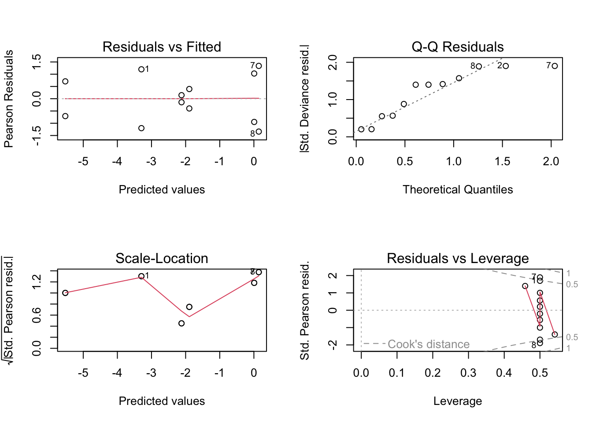
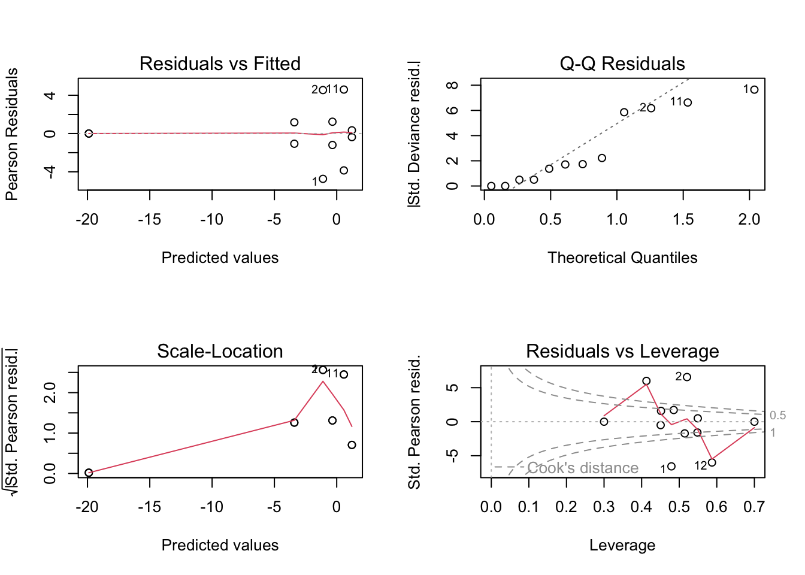

rpn_bleach <- read.csv('rpn_bleach_2015.csv') %>%
as_tibble() %>%
mutate_at(vars(location, depth, transect, group, status), factor)Percent Cover and Bleaching in 2015
rpn_summary <- rpn_bleach %>%
group_by(location, depth, transect, group) %>%
dplyr::summarise(total_count = n())`summarise()` has grouped output by 'location', 'depth', 'transect'. You can
override using the `.groups` argument.rpn_PLOB <- rpn_bleach %>%
filter(group == "PLOB") %>%
group_by(location, depth, transect) %>%
dplyr::summarise(total_count = n())`summarise()` has grouped output by 'location', 'depth'. You can override using
the `.groups` argument.rpn_plob <- read.csv('rpn_cover.csv') %>%
as_tibble() %>%
filter(group == "PLOB") %>%
mutate_at(vars(location, depth, transect, group), factor) %>%
mutate(
cover = total_count/total_points,
failures = total_points - total_count
)rpn_plob# A tibble: 12 × 8
location depth transect group total_count total_points cover failures
<fct> <fct> <fct> <fct> <int> <int> <dbl> <int>
1 north dp one PLOB 104 126 0.825 22
2 north dp two PLOB 113 126 0.897 13
3 north sh one PLOB 83 126 0.659 43
4 north sh two PLOB 88 126 0.698 38
5 se dp one PLOB 34 124 0.274 90
6 se dp two PLOB 28 105 0.267 77
7 se sh one PLOB 35 126 0.278 91
8 se sh two PLOB 15 126 0.119 111
9 west dp one PLOB 89 126 0.706 37
10 west dp two PLOB 73 126 0.579 53
11 west sh one PLOB 74 126 0.587 52
12 west sh two PLOB 101 126 0.802 25Porites
Generalized linear model
plob.glm <- glm(cbind(total_count, failures) ~ location * depth,
family = binomial(link = "logit"),
data = rpn_plob)par(mfrow = c(2, 2))
plot(plob.glm)
summary(plob.glm)
Call:
glm(formula = cbind(total_count, failures) ~ location * depth,
family = binomial(link = "logit"), data = rpn_plob)
Deviance Residuals:
Min 1Q Median 3Q Max
-2.54165 -1.20892 -0.00388 1.28236 2.71923
Coefficients:
Estimate Std. Error z value Pr(>|z|)
(Intercept) 1.8245 0.1822 10.017 < 2e-16 ***
locationse -2.8154 0.2352 -11.973 < 2e-16 ***
locationwest -1.2368 0.2246 -5.506 3.68e-08 ***
depthsh -1.0773 0.2267 -4.753 2.00e-06 ***
locationse:depthsh 0.6719 0.3138 2.142 0.0322 *
locationwest:depthsh 1.3105 0.2956 4.434 9.25e-06 ***
---
Signif. codes: 0 '***' 0.001 '**' 0.01 '*' 0.05 '.' 0.1 ' ' 1
(Dispersion parameter for binomial family taken to be 1)
Null deviance: 396.020 on 11 degrees of freedom
Residual deviance: 31.694 on 6 degrees of freedom
AIC: 102.95
Number of Fisher Scoring iterations: 4https://www.rpubs.com/daharo_calpoly/502695
rpn_plob$groups <- interaction(rpn_plob$location, rpn_plob$depth)Create a post-hoc model
model_plob <- with(rpn_plob, glm(cbind(total_count, failures) ~ groups, family = binomial))Determine the post-hoc comparisons of interest
summary(glht(model_plob,
linfct = mcp(groups =
#Is the difference between these groups different from zero?
c("(north.sh) - (west.sh) = 0",
"(north.sh) - (west.dp) = 0",
"(north.sh) - (se.sh) = 0",
"(north.sh) - (se.dp) = 0",
"(north.dp) - (west.sh) = 0",
"(north.dp) - (west.dp) = 0",
"(north.dp) - (se.sh) = 0",
"(north.dp) - (se.dp) = 0",
"(se.sh) - (west.sh) = 0",
"(se.sh) - (west.dp) = 0",
"(se.dp) - (west.sh) = 0",
"(se.dp) - (west.dp) = 0"))),
test = adjusted("holm"))
Simultaneous Tests for General Linear Hypotheses
Multiple Comparisons of Means: User-defined Contrasts
Fit: glm(formula = cbind(total_count, failures) ~ groups, family = binomial)
Linear Hypotheses:
Estimate Std. Error z value Pr(>|z|)
(north.sh) - (west.sh) == 0 -0.07377 0.19208 -0.384 0.795
(north.sh) - (west.dp) == 0 0.15943 0.18835 0.846 0.795
(north.sh) - (se.sh) == 0 2.14346 0.20771 10.319 < 2e-16 ***
(north.sh) - (se.dp) == 0 1.73807 0.20078 8.657 < 2e-16 ***
(north.dp) - (west.sh) == 0 1.00357 0.22777 4.406 3.16e-05 ***
(north.dp) - (west.dp) == 0 1.23676 0.22464 5.506 1.47e-07 ***
(north.dp) - (se.sh) == 0 3.22079 0.24110 13.359 < 2e-16 ***
(north.dp) - (se.dp) == 0 2.81541 0.23515 11.973 < 2e-16 ***
(se.sh) - (west.sh) == 0 -2.21723 0.20893 -10.612 < 2e-16 ***
(se.sh) - (west.dp) == 0 -1.98403 0.20551 -9.654 < 2e-16 ***
(se.dp) - (west.sh) == 0 -1.81184 0.20204 -8.968 < 2e-16 ***
(se.dp) - (west.dp) == 0 -1.57865 0.19850 -7.953 8.88e-15 ***
---
Signif. codes: 0 '***' 0.001 '**' 0.01 '*' 0.05 '.' 0.1 ' ' 1
(Adjusted p values reported -- holm method)rpn_plob_bleach <- rpn_bleach %>%
filter(group == 'PLOB' & status == 'BL') %>%
group_by(location, depth, transect) %>%
dplyr::summarise(total_count = n())`summarise()` has grouped output by 'location', 'depth'. You can override using
the `.groups` argument.rpn_plob_bleach# A tibble: 0 × 4
# Groups: location, depth [0]
# … with 4 variables: location <fct>, depth <fct>, transect <fct>,
# total_count <int>rpn_plob_pb <- rpn_bleach %>%
filter(group == 'PLOB' & status == 'PB') %>%
group_by(location, depth, transect) %>%
dplyr::summarise(total_count = n())`summarise()` has grouped output by 'location', 'depth'. You can override using
the `.groups` argument.rpn_plob_pb# A tibble: 9 × 4
# Groups: location, depth [5]
location depth transect total_count
<fct> <fct> <fct> <int>
1 north dp one 5
2 north dp two 49
3 north sh one 40
4 north sh two 31
5 se dp two 2
6 west dp one 70
7 west dp two 55
8 west sh one 64
9 west sh two 46rpn_plob_pale <- rpn_bleach %>%
filter(group == 'PLOB' & status == 'P') %>%
group_by(location, depth, transect) %>%
dplyr::summarise(total_count = n())`summarise()` has grouped output by 'location', 'depth'. You can override using
the `.groups` argument.rpn_plob_pale# A tibble: 12 × 4
# Groups: location, depth [6]
location depth transect total_count
<fct> <fct> <fct> <int>
1 north dp one 87
2 north dp two 52
3 north sh one 28
4 north sh two 37
5 se dp one 23
6 se dp two 2
7 se sh one 29
8 se sh two 9
9 west dp one 17
10 west dp two 16
11 west sh one 5
12 west sh two 55rpn_plob_healthy <- rpn_bleach %>%
filter(group == 'PLOB' & status == 'H') %>%
group_by(location, depth, transect) %>%
dplyr::summarise(total_count = n())`summarise()` has grouped output by 'location', 'depth'. You can override using
the `.groups` argument.rpn_plob_healthy# A tibble: 10 × 4
# Groups: location, depth [6]
location depth transect total_count
<fct> <fct> <fct> <int>
1 north dp one 12
2 north dp two 12
3 north sh one 15
4 north sh two 20
5 se dp one 11
6 se sh one 6
7 se sh two 6
8 west dp one 2
9 west dp two 2
10 west sh one 5Pocillopora
Generalized linear model
rpn_poci# A tibble: 12 × 8
location depth transect group total_count total_points cover failures
<fct> <fct> <fct> <fct> <int> <int> <dbl> <int>
1 north dp one POCI 7 126 0.0556 119
2 north dp two POCI 2 126 0.0159 124
3 north sh one POCI 0 126 0 126
4 north sh two POCI 1 126 0.00794 125
5 se dp one POCI 57 124 0.460 67
6 se dp two POCI 58 105 0.552 47
7 se sh one POCI 75 126 0.595 51
8 se sh two POCI 60 126 0.476 66
9 west dp one POCI 13 126 0.103 113
10 west dp two POCI 14 126 0.111 112
11 west sh one POCI 15 126 0.119 111
12 west sh two POCI 18 126 0.143 108poci.glm <- glm(cbind(total_count, failures) ~ location * depth,
family = binomial(link = "logit"),
data = rpn_poci)par(mfrow = c(2, 2))
plot(poci.glm)
summary(poci.glm)
Call:
glm(formula = cbind(total_count, failures) ~ location * depth,
family = binomial(link = "logit"), data = rpn_poci)
Deviance Residuals:
Min 1Q Median 3Q Max
-1.34438 -0.96059 -0.00078 0.72479 1.34520
Coefficients:
Estimate Std. Error z value Pr(>|z|)
(Intercept) -3.2958 0.3395 -9.709 < 2e-16 ***
locationse 3.3046 0.3643 9.072 < 2e-16 ***
locationwest 1.1756 0.3959 2.970 0.00298 **
depthsh -2.2296 1.0579 -2.108 0.03507 *
locationse:depthsh 2.3640 1.0736 2.202 0.02767 *
locationwest:depthsh 2.4573 1.0934 2.247 0.02462 *
---
Signif. codes: 0 '***' 0.001 '**' 0.01 '*' 0.05 '.' 0.1 ' ' 1
(Dispersion parameter for binomial family taken to be 1)
Null deviance: 436.578 on 11 degrees of freedom
Residual deviance: 10.347 on 6 degrees of freedom
AIC: 69.293
Number of Fisher Scoring iterations: 5Anova function from the car package
Anova(poci.glm, type = "III") # Type III because...Analysis of Deviance Table (Type III tests)
Response: cbind(total_count, failures)
LR Chisq Df Pr(>Chisq)
location 178.902 2 < 2.2e-16 ***
depth 7.491 1 0.006201 **
location:depth 8.513 2 0.014171 *
---
Signif. codes: 0 '***' 0.001 '**' 0.01 '*' 0.05 '.' 0.1 ' ' 1https://www.rpubs.com/daharo_calpoly/502695
rpn_poci$groups <- interaction(rpn_poci$location, rpn_poci$depth)Create a post-hoc model
model_poci <- with(rpn_poci, glm(cbind(total_count, failures) ~ groups, family = binomial))Determine the post-hoc comparisons of interest
summary(glht(model_poci,
linfct = mcp(groups =
#Is the difference between these groups different from zero?
c("(north.sh) - (west.sh) = 0",
"(north.sh) - (west.dp) = 0",
"(north.sh) - (se.sh) = 0",
"(north.sh) - (se.dp) = 0",
"(north.dp) - (west.sh) = 0",
"(north.dp) - (west.dp) = 0",
"(north.dp) - (se.sh) = 0",
"(north.dp) - (se.dp) = 0",
"(se.sh) - (west.sh) = 0",
"(se.sh) - (west.dp) = 0",
"(se.dp) - (west.sh) = 0",
"(se.dp) - (west.dp) = 0"))),
test = adjusted("holm"))
Simultaneous Tests for General Linear Hypotheses
Multiple Comparisons of Means: User-defined Contrasts
Fit: glm(formula = cbind(total_count, failures) ~ groups, family = binomial)
Linear Hypotheses:
Estimate Std. Error z value Pr(>|z|)
(north.sh) - (west.sh) == 0 -3.6329 1.0192 -3.564 0.00117 **
(north.sh) - (west.dp) == 0 -3.4052 1.0225 -3.330 0.00173 **
(north.sh) - (se.sh) == 0 -5.6686 1.0099 -5.613 1.19e-07 ***
(north.sh) - (se.dp) == 0 -5.5342 1.0107 -5.476 2.18e-07 ***
(north.dp) - (west.sh) == 0 -1.4033 0.3874 -3.622 0.00117 **
(north.dp) - (west.dp) == 0 -1.1756 0.3959 -2.970 0.00298 **
(north.dp) - (se.sh) == 0 -3.4389 0.3622 -9.495 < 2e-16 ***
(north.dp) - (se.dp) == 0 -3.3046 0.3643 -9.072 < 2e-16 ***
(se.sh) - (west.sh) == 0 2.0357 0.2254 9.030 < 2e-16 ***
(se.sh) - (west.dp) == 0 2.2634 0.2397 9.444 < 2e-16 ***
(se.dp) - (west.sh) == 0 1.9013 0.2288 8.311 < 2e-16 ***
(se.dp) - (west.dp) == 0 2.1290 0.2428 8.769 < 2e-16 ***
---
Signif. codes: 0 '***' 0.001 '**' 0.01 '*' 0.05 '.' 0.1 ' ' 1
(Adjusted p values reported -- holm method)rpn_poci_bleach <- rpn_bleach %>%
filter(group == 'POCI' & status == 'BL') %>%
group_by(location, depth, transect) %>%
dplyr::summarise(total_count = n())`summarise()` has grouped output by 'location', 'depth'. You can override using
the `.groups` argument.rpn_poci_bleach# A tibble: 6 × 4
# Groups: location, depth [5]
location depth transect total_count
<fct> <fct> <fct> <int>
1 north dp one 1
2 se dp one 1
3 se dp two 2
4 se sh two 1
5 west dp one 4
6 west sh two 2rpn_poci_pb <- rpn_bleach %>%
filter(group == 'POCI' & status == 'PB') %>%
group_by(location, depth, transect) %>%
dplyr::summarise(total_count = n())`summarise()` has grouped output by 'location', 'depth'. You can override using
the `.groups` argument.rpn_poci_pb# A tibble: 8 × 4
# Groups: location, depth [5]
location depth transect total_count
<fct> <fct> <fct> <int>
1 north dp one 2
2 north dp two 1
3 se dp one 27
4 se dp two 9
5 se sh one 2
6 se sh two 5
7 west dp two 2
8 west sh one 1rpn_poci_pale <- rpn_bleach %>%
filter(group == 'POCI' & status == 'P') %>%
group_by(location, depth, transect) %>%
dplyr::summarise(total_count = n())`summarise()` has grouped output by 'location', 'depth'. You can override using
the `.groups` argument.rpn_poci_pale# A tibble: 10 × 4
# Groups: location, depth [5]
location depth transect total_count
<fct> <fct> <fct> <int>
1 north dp one 3
2 north dp two 1
3 se dp one 19
4 se dp two 16
5 se sh one 59
6 se sh two 45
7 west dp one 7
8 west dp two 8
9 west sh one 13
10 west sh two 9rpn_poci_healthy <- rpn_bleach %>%
filter(group == 'POCI' & status == 'H') %>%
group_by(location, depth, transect) %>%
dplyr::summarise(total_count = n())`summarise()` has grouped output by 'location', 'depth'. You can override using
the `.groups` argument.rpn_poci_healthy# A tibble: 9 × 4
# Groups: location, depth [6]
location depth transect total_count
<fct> <fct> <fct> <int>
1 north dp one 1
2 north sh two 1
3 se dp one 10
4 se sh one 14
5 se sh two 9
6 west dp one 2
7 west dp two 4
8 west sh one 1
9 west sh two 7Examine bleaching response of coral groups
Porites
rpn_bleach <- read.csv('rpn_coral_bleach.csv') %>%
as_tibble() %>%
#filter(group == "PLOB") %>%
mutate_at(vars(location, depth, transect, species), factor) %>%
mutate(
bl = coral_count - bl_count,
pb = coral_count - pb_count,
p = coral_count - p_count,
h = coral_count - h_count,
)rpn_bleach# A tibble: 24 × 13
species location depth transect bl_co…¹ pb_co…² p_count h_count coral…³ bl
<fct> <fct> <fct> <fct> <int> <int> <int> <int> <int> <int>
1 plob north dp one 0 5 87 12 104 104
2 plob north dp two 0 49 52 12 113 113
3 plob north sh one 0 40 28 15 83 83
4 plob north sh two 0 31 37 20 88 88
5 plob se dp one 0 0 23 11 34 34
6 plob se dp two 0 2 2 0 28 28
7 plob se sh one 0 0 29 6 35 35
8 plob se sh two 0 0 9 6 15 15
9 plob west dp one 0 70 17 2 89 89
10 plob west dp two 0 55 16 2 73 73
# … with 14 more rows, 3 more variables: pb <int>, p <int>, h <int>, and
# abbreviated variable names ¹bl_count, ²pb_count, ³coral_countplob_bleach <- rpn_bleach %>%
filter(species == "plob")plob_bleach# A tibble: 12 × 13
species location depth transect bl_co…¹ pb_co…² p_count h_count coral…³ bl
<fct> <fct> <fct> <fct> <int> <int> <int> <int> <int> <int>
1 plob north dp one 0 5 87 12 104 104
2 plob north dp two 0 49 52 12 113 113
3 plob north sh one 0 40 28 15 83 83
4 plob north sh two 0 31 37 20 88 88
5 plob se dp one 0 0 23 11 34 34
6 plob se dp two 0 2 2 0 28 28
7 plob se sh one 0 0 29 6 35 35
8 plob se sh two 0 0 9 6 15 15
9 plob west dp one 0 70 17 2 89 89
10 plob west dp two 0 55 16 2 73 73
11 plob west sh one 0 64 5 0 71 71
12 plob west sh two 0 46 55 5 101 101
# … with 3 more variables: pb <int>, p <int>, h <int>, and abbreviated variable
# names ¹bl_count, ²pb_count, ³coral_countplob_pb.glm <- glm(cbind(pb_count, pb) ~ location * depth,
family = binomial(link = "logit"),
data = plob_bleach)par(mfrow = c(2, 2))
plot(plob_pb.glm)
summary(plob_pb.glm)
Call:
glm(formula = cbind(pb_count, pb) ~ location * depth, family = binomial(link = "logit"),
data = plob_bleach)
Deviance Residuals:
Min 1Q Median 3Q Max
-5.5192 -1.2798 -0.0003 1.0681 5.0776
Coefficients:
Estimate Std. Error z value Pr(>|z|)
(Intercept) -1.1048 0.1570 -7.036 1.98e-12 ***
locationse -2.2964 0.7357 -3.121 0.001801 **
locationwest 2.3222 0.2443 9.506 < 2e-16 ***
depthsh 0.7623 0.2208 3.453 0.000555 ***
locationse:depthsh -17.2555 1792.1996 -0.010 0.992318
locationwest:depthsh -1.4063 0.3301 -4.260 2.04e-05 ***
---
Signif. codes: 0 '***' 0.001 '**' 0.01 '*' 0.05 '.' 0.1 ' ' 1
(Dispersion parameter for binomial family taken to be 1)
Null deviance: 344.520 on 11 degrees of freedom
Residual deviance: 95.151 on 6 degrees of freedom
AIC: 145.78
Number of Fisher Scoring iterations: 16Anova function from the car package
Anova(plob_pb.glm, type = "III") # Type III because...Analysis of Deviance Table (Type III tests)
Response: cbind(pb_count, pb)
LR Chisq Df Pr(>Chisq)
location 161.859 2 < 2.2e-16 ***
depth 12.092 1 0.0005065 ***
location:depth 21.115 2 2.6e-05 ***
---
Signif. codes: 0 '***' 0.001 '**' 0.01 '*' 0.05 '.' 0.1 ' ' 1plob_pb.aov <- Anova(plob_pb.glm, type = "III") # Type III because...https://www.rpubs.com/daharo_calpoly/502695
plob_bleach$groups <- interaction(plob_bleach$location, plob_bleach$depth)Create a post-hoc model
model_plob_bleach <- with(plob_bleach, glm(cbind(pb_count, pb) ~ groups, family = binomial))Determine the post-hoc comparisons of interest
summary(glht(model_plob_bleach,
linfct = mcp(groups =
#Is the difference between these groups different from zero?
c("(north.sh) - (west.sh) = 0",
"(north.sh) - (west.dp) = 0",
"(north.sh) - (se.sh) = 0",
"(north.sh) - (se.dp) = 0",
"(north.dp) - (west.sh) = 0",
"(north.dp) - (west.dp) = 0",
"(north.dp) - (se.sh) = 0",
"(north.dp) - (se.dp) = 0",
"(se.sh) - (west.sh) = 0",
"(se.sh) - (west.dp) = 0",
"(se.dp) - (west.sh) = 0",
"(se.dp) - (west.dp) = 0"))),
test = adjusted("holm"))
Simultaneous Tests for General Linear Hypotheses
Multiple Comparisons of Means: User-defined Contrasts
Fit: glm(formula = cbind(pb_count, pb) ~ groups, family = binomial)
Linear Hypotheses:
Estimate Std. Error z value Pr(>|z|)
(north.sh) - (west.sh) == 0 -0.9158 0.2220 -4.125 0.000223 ***
(north.sh) - (west.dp) == 0 -1.5599 0.2431 -6.416 1.40e-09 ***
(north.sh) - (se.sh) == 0 19.5519 1792.1994 0.011 1.000000
(north.sh) - (se.dp) == 0 3.0587 0.7354 4.159 0.000223 ***
(north.dp) - (west.sh) == 0 -1.6781 0.2233 -7.514 6.30e-13 ***
(north.dp) - (west.dp) == 0 -2.3222 0.2443 -9.506 < 2e-16 ***
(north.dp) - (se.sh) == 0 18.7897 1792.1994 0.010 1.000000
(north.dp) - (se.dp) == 0 2.2964 0.7357 3.121 0.009005 **
(se.sh) - (west.sh) == 0 -20.4678 1792.1994 -0.011 1.000000
(se.sh) - (west.dp) == 0 -21.1118 1792.1994 -0.012 1.000000
(se.dp) - (west.sh) == 0 -3.9745 0.7361 -5.399 5.35e-07 ***
(se.dp) - (west.dp) == 0 -4.6186 0.7428 -6.218 4.53e-09 ***
---
Signif. codes: 0 '***' 0.001 '**' 0.01 '*' 0.05 '.' 0.1 ' ' 1
(Adjusted p values reported -- holm method)PLOB pale
plob_pale.glm <- glm(cbind(p_count, p) ~ location * depth,
family = binomial(link = "logit"),
data = plob_bleach)par(mfrow = c(2, 2))
plot(plob_pale.glm)
summary(plob_pale.glm)
Call:
glm(formula = cbind(p_count, p) ~ location * depth, family = binomial(link = "logit"),
data = plob_bleach)
Deviance Residuals:
Min 1Q Median 3Q Max
-5.5666 -2.0023 0.0128 1.5432 4.4335
Coefficients:
Estimate Std. Error z value Pr(>|z|)
(Intercept) 0.5778 0.1415 4.084 4.43e-05 ***
locationse -0.9698 0.2950 -3.287 0.00101 **
locationwest -1.9411 0.2410 -8.055 7.95e-16 ***
depthsh -1.0668 0.2117 -5.038 4.70e-07 ***
locationse:depthsh 2.6115 0.4706 5.549 2.88e-08 ***
locationwest:depthsh 1.8060 0.3294 5.483 4.18e-08 ***
---
Signif. codes: 0 '***' 0.001 '**' 0.01 '*' 0.05 '.' 0.1 ' ' 1
(Dispersion parameter for binomial family taken to be 1)
Null deviance: 217.65 on 11 degrees of freedom
Residual deviance: 112.66 on 6 degrees of freedom
AIC: 174.36
Number of Fisher Scoring iterations: 4Anova function from the car package
Anova(plob_pale.glm, type = "III") # Type III because...Analysis of Deviance Table (Type III tests)
Response: cbind(p_count, p)
LR Chisq Df Pr(>Chisq)
location 75.499 2 < 2.2e-16 ***
depth 26.276 1 2.959e-07 ***
location:depth 49.739 2 1.583e-11 ***
---
Signif. codes: 0 '***' 0.001 '**' 0.01 '*' 0.05 '.' 0.1 ' ' 1plob_pale.aov <- Anova(plob_pale.glm, type = "III") # Type III because...https://www.rpubs.com/daharo_calpoly/502695
plob_bleach$groups <- interaction(plob_bleach$location, plob_bleach$depth)Create a post-hoc model
model_plob_pale <- with(plob_bleach, glm(cbind(p_count, p) ~ groups, family = binomial))Determine the post-hoc comparisons of interest
summary(glht(model_plob_pale,
linfct = mcp(groups =
#Is the difference between these groups different from zero?
c("(north.sh) - (west.sh) = 0",
"(north.sh) - (west.dp) = 0",
"(north.sh) - (se.sh) = 0",
"(north.sh) - (se.dp) = 0",
"(north.dp) - (west.sh) = 0",
"(north.dp) - (west.dp) = 0",
"(north.dp) - (se.sh) = 0",
"(north.dp) - (se.dp) = 0",
"(se.sh) - (west.sh) = 0",
"(se.sh) - (west.dp) = 0",
"(se.dp) - (west.sh) = 0",
"(se.dp) - (west.dp) = 0"))),
test = adjusted("holm"))
Simultaneous Tests for General Linear Hypotheses
Multiple Comparisons of Means: User-defined Contrasts
Fit: glm(formula = cbind(p_count, p) ~ groups, family = binomial)
Linear Hypotheses:
Estimate Std. Error z value Pr(>|z|)
(north.sh) - (west.sh) == 0 0.13510 0.22453 0.602 1.00000
(north.sh) - (west.dp) == 0 0.87425 0.25075 3.487 0.00342 **
(north.sh) - (se.sh) == 0 -1.64173 0.36670 -4.477 6.05e-05 ***
(north.sh) - (se.dp) == 0 -0.09701 0.30306 -0.320 1.00000
(north.dp) - (west.sh) == 0 1.20192 0.21356 5.628 1.82e-07 ***
(north.dp) - (west.dp) == 0 1.94107 0.24098 8.055 1.07e-14 ***
(north.dp) - (se.sh) == 0 -0.57491 0.36009 -1.597 0.44143
(north.dp) - (se.dp) == 0 0.96981 0.29503 3.287 0.00607 **
(se.sh) - (west.sh) == 0 1.77683 0.36776 4.832 1.22e-05 ***
(se.sh) - (west.dp) == 0 2.51598 0.38432 6.547 6.48e-10 ***
(se.dp) - (west.sh) == 0 0.23211 0.30434 0.763 1.00000
(se.dp) - (west.dp) == 0 0.97126 0.32416 2.996 0.01367 *
---
Signif. codes: 0 '***' 0.001 '**' 0.01 '*' 0.05 '.' 0.1 ' ' 1
(Adjusted p values reported -- holm method)PLOB healthy
Interaction
plob_h.glm <- glm(cbind(h_count, h) ~ location * depth,
family = binomial(link = "logit"),
data = plob_bleach)par(mfrow = c(2, 2))
plot(plob_h.glm)
summary(plob_h.glm)
Call:
glm(formula = cbind(h_count, h) ~ location * depth, family = binomial(link = "logit"),
data = plob_bleach)
Deviance Residuals:
Min 1Q Median 3Q Max
-3.3072 -0.6585 0.0047 0.6672 2.0546
Coefficients:
Estimate Std. Error z value Pr(>|z|)
(Intercept) -2.0846 0.2164 -9.631 < 2e-16 ***
locationse 0.5507 0.3967 1.388 0.16506
locationwest -1.5917 0.5506 -2.891 0.00384 **
depthsh 0.7273 0.2877 2.528 0.01147 *
locationse:depthsh -0.3461 0.5504 -0.629 0.52949
locationwest:depthsh -0.5596 0.7383 -0.758 0.44849
---
Signif. codes: 0 '***' 0.001 '**' 0.01 '*' 0.05 '.' 0.1 ' ' 1
(Dispersion parameter for binomial family taken to be 1)
Null deviance: 78.898 on 11 degrees of freedom
Residual deviance: 24.092 on 6 degrees of freedom
AIC: 72.567
Number of Fisher Scoring iterations: 5Anova function from the car package
Anova(plob_h.glm, type = "III") # Type III because...Analysis of Deviance Table (Type III tests)
Response: cbind(h_count, h)
LR Chisq Df Pr(>Chisq)
location 17.2263 2 0.0001817 ***
depth 6.5218 1 0.0106558 *
location:depth 0.8028 2 0.6693953
---
Signif. codes: 0 '***' 0.001 '**' 0.01 '*' 0.05 '.' 0.1 ' ' 1plob_pale.aov <- Anova(plob_h.glm, type = "III") # Type III because...No interaction
plob_h.glm2 <- glm(cbind(h_count, h) ~ location + depth,
family = binomial(link = "logit"),
data = plob_bleach)par(mfrow = c(2, 2))
plot(plob_h.glm2)
summary(plob_h.glm2)
Call:
glm(formula = cbind(h_count, h) ~ location + depth, family = binomial(link = "logit"),
data = plob_bleach)
Deviance Residuals:
Min 1Q Median 3Q Max
-3.15440 -0.62092 0.05079 0.77454 2.30294
Coefficients:
Estimate Std. Error z value Pr(>|z|)
(Intercept) -2.0042 0.1892 -10.592 < 2e-16 ***
locationse 0.3666 0.2751 1.332 0.1827
locationwest -1.9215 0.3678 -5.225 1.74e-07 ***
depthsh 0.5819 0.2308 2.521 0.0117 *
---
Signif. codes: 0 '***' 0.001 '**' 0.01 '*' 0.05 '.' 0.1 ' ' 1
(Dispersion parameter for binomial family taken to be 1)
Null deviance: 78.898 on 11 degrees of freedom
Residual deviance: 24.895 on 8 degrees of freedom
AIC: 69.37
Number of Fisher Scoring iterations: 5Anova function from the car package
Anova(plob_h.glm2, type = "III") # Type III because...Analysis of Deviance Table (Type III tests)
Response: cbind(h_count, h)
LR Chisq Df Pr(>Chisq)
location 49.890 2 1.467e-11 ***
depth 6.441 1 0.01115 *
---
Signif. codes: 0 '***' 0.001 '**' 0.01 '*' 0.05 '.' 0.1 ' ' 1Determine the post-hoc comparisons of interest
summary(glht(plob_h.glm2, linfct = mcp(location = "Tukey")))
Simultaneous Tests for General Linear Hypotheses
Multiple Comparisons of Means: Tukey Contrasts
Fit: glm(formula = cbind(h_count, h) ~ location + depth, family = binomial(link = "logit"),
data = plob_bleach)
Linear Hypotheses:
Estimate Std. Error z value Pr(>|z|)
se - north == 0 0.3666 0.2751 1.332 0.37
west - north == 0 -1.9215 0.3678 -5.225 <1e-04 ***
west - se == 0 -2.2880 0.4131 -5.539 <1e-04 ***
---
Signif. codes: 0 '***' 0.001 '**' 0.01 '*' 0.05 '.' 0.1 ' ' 1
(Adjusted p values reported -- single-step method)Pocillopora
poci_bleach <- rpn_bleach %>%
filter(species == "poci")poci_bleach# A tibble: 12 × 13
species location depth transect bl_co…¹ pb_co…² p_count h_count coral…³ bl
<fct> <fct> <fct> <fct> <int> <int> <int> <int> <int> <int>
1 poci north dp one 1 2 3 1 7 6
2 poci north dp two 0 1 1 0 2 2
3 poci north sh one 0 0 0 0 0 0
4 poci north sh two 0 0 0 1 1 1
5 poci se dp one 1 27 19 10 57 56
6 poci se dp two 2 9 16 0 58 56
7 poci se sh one 0 2 59 14 75 75
8 poci se sh two 1 5 45 9 60 59
9 poci west dp one 4 0 7 2 13 9
10 poci west dp two 0 2 8 4 14 14
11 poci west sh one 0 1 13 1 15 15
12 poci west sh two 2 0 9 7 18 16
# … with 3 more variables: pb <int>, p <int>, h <int>, and abbreviated variable
# names ¹bl_count, ²pb_count, ³coral_countPOCI Partially Bleached
Interaction
poci_pb.glm <- glm(cbind(pb_count, pb) ~ location * depth,
family = binomial(link = "logit"),
data = poci_bleach)par(mfrow = c(2, 2))
plot(poci_pb.glm)Warning: not plotting observations with leverage one:
3
summary(poci_pb.glm)
Call:
glm(formula = cbind(pb_count, pb) ~ location * depth, family = binomial(link = "logit"),
data = poci_bleach)
Deviance Residuals:
1 2 3 4 5 6 7 8
-0.27079 0.48535 0.00000 -0.00022 2.52677 -2.76404 -1.08056 1.01500
9 10 11 12
-1.41456 0.88009 0.71184 -1.05251
Coefficients:
Estimate Std. Error z value Pr(>|z|)
(Intercept) -0.69315 0.70711 -0.980 0.3270
locationse -0.09278 0.73514 -0.126 0.8996
locationwest -1.83258 1.01980 -1.797 0.0723 .
depthsh -16.87292 3956.18039 -0.004 0.9966
locationse:depthsh 14.75273 3956.18041 0.004 0.9970
locationwest:depthsh 15.93291 3956.18059 0.004 0.9968
---
Signif. codes: 0 '***' 0.001 '**' 0.01 '*' 0.05 '.' 0.1 ' ' 1
(Dispersion parameter for binomial family taken to be 1)
Null deviance: 62.211 on 10 degrees of freedom
Residual deviance: 20.921 on 5 degrees of freedom
AIC: 55.354
Number of Fisher Scoring iterations: 16Anova function from the car package
Anova(poci_pb.glm, type = "III") # Type III because...Analysis of Deviance Table (Type III tests)
Response: cbind(pb_count, pb)
LR Chisq Df Pr(>Chisq)
location 7.9356 2 0.01892 *
depth 0.7600 1 0.38332
location:depth 0.8257 2 0.66178
---
Signif. codes: 0 '***' 0.001 '**' 0.01 '*' 0.05 '.' 0.1 ' ' 1No interaction
poci_pb.glm <- glm(cbind(pb_count, pb) ~ location + depth,
family = binomial(link = "logit"),
data = poci_bleach)par(mfrow = c(2, 2))
plot(poci_pb.glm)
summary(poci_pb.glm)
Call:
glm(formula = cbind(pb_count, pb) ~ location + depth, family = binomial(link = "logit"),
data = poci_bleach)
Deviance Residuals:
Min 1Q Median 3Q Max
-2.6979 -0.8276 -0.1169 0.6541 2.5992
Coefficients:
Estimate Std. Error z value Pr(>|z|)
(Intercept) -0.72330 0.70092 -1.032 0.3021
locationse -0.08263 0.72752 -0.114 0.9096
locationwest -1.53602 0.92597 -1.659 0.0972 .
depthsh -2.02830 0.41105 -4.934 8.04e-07 ***
---
Signif. codes: 0 '***' 0.001 '**' 0.01 '*' 0.05 '.' 0.1 ' ' 1
(Dispersion parameter for binomial family taken to be 1)
Null deviance: 62.211 on 10 degrees of freedom
Residual deviance: 21.747 on 7 degrees of freedom
AIC: 52.18
Number of Fisher Scoring iterations: 5Anova function from the car package
Anova(poci_pb.glm, type = "III") # Type III because...Analysis of Deviance Table (Type III tests)
Response: cbind(pb_count, pb)
LR Chisq Df Pr(>Chisq)
location 7.508 2 0.02342 *
depth 32.047 1 1.505e-08 ***
---
Signif. codes: 0 '***' 0.001 '**' 0.01 '*' 0.05 '.' 0.1 ' ' 1Determine the post-hoc comparisons of interest
summary(glht(poci_pb.glm, linfct = mcp(location = "Tukey")))
Simultaneous Tests for General Linear Hypotheses
Multiple Comparisons of Means: Tukey Contrasts
Fit: glm(formula = cbind(pb_count, pb) ~ location + depth, family = binomial(link = "logit"),
data = poci_bleach)
Linear Hypotheses:
Estimate Std. Error z value Pr(>|z|)
se - north == 0 -0.08263 0.72752 -0.114 0.9926
west - north == 0 -1.53602 0.92597 -1.659 0.2126
west - se == 0 -1.45339 0.62897 -2.311 0.0516 .
---
Signif. codes: 0 '***' 0.001 '**' 0.01 '*' 0.05 '.' 0.1 ' ' 1
(Adjusted p values reported -- single-step method)summary(glht(poci_pb.glm, linfct = mcp(depth = "Tukey")))
Simultaneous Tests for General Linear Hypotheses
Multiple Comparisons of Means: Tukey Contrasts
Fit: glm(formula = cbind(pb_count, pb) ~ location + depth, family = binomial(link = "logit"),
data = poci_bleach)
Linear Hypotheses:
Estimate Std. Error z value Pr(>|z|)
sh - dp == 0 -2.0283 0.4111 -4.934 8.04e-07 ***
---
Signif. codes: 0 '***' 0.001 '**' 0.01 '*' 0.05 '.' 0.1 ' ' 1
(Adjusted p values reported -- single-step method)POCI Pale
poci_pale.glm <- glm(cbind(p_count, p) ~ location * depth,
family = binomial(link = "logit"),
data = poci_bleach)par(mfrow = c(2, 2))
plot(poci_pale.glm)Warning: not plotting observations with leverage one:
3
summary(poci_pale.glm)
Call:
glm(formula = cbind(p_count, p) ~ location * depth, family = binomial(link = "logit"),
data = poci_bleach)
Deviance Residuals:
1 2 3 4 5 6 7 8
-0.08462 0.15762 0.00000 -0.00013 0.47159 -0.47587 0.33844 -0.37143
9 10 11 12
-0.12389 0.11968 1.77660 -1.45605
Coefficients:
Estimate Std. Error z value Pr(>|z|)
(Intercept) -0.2231 0.6708 -0.333 0.739
locationse -0.6035 0.7008 -0.861 0.389
locationwest 0.4463 0.7746 0.576 0.565
depthsh -18.3429 6522.6386 -0.003 0.998
locationse:depthsh 20.3800 6522.6386 0.003 0.998
locationwest:depthsh 18.8129 6522.6386 0.003 0.998
(Dispersion parameter for binomial family taken to be 1)
Null deviance: 66.3499 on 10 degrees of freedom
Residual deviance: 6.0394 on 5 degrees of freedom
AIC: 51.212
Number of Fisher Scoring iterations: 17Anova function from the car package
Anova(poci_pale.glm, type = "III") # Type III because...Analysis of Deviance Table (Type III tests)
Response: cbind(p_count, p)
LR Chisq Df Pr(>Chisq)
location 6.1173 2 0.046951 *
depth 1.0949 1 0.295383
location:depth 9.5663 2 0.008369 **
---
Signif. codes: 0 '***' 0.001 '**' 0.01 '*' 0.05 '.' 0.1 ' ' 1poci_pale.aov <- Anova(poci_pale.glm, type = "III") # Type III because...https://www.rpubs.com/daharo_calpoly/502695
poci_bleach$groups <- interaction(poci_bleach$location, poci_bleach$depth)Create a post-hoc model
model_poci_pale <- with(poci_bleach, glm(cbind(p_count, p) ~ groups, family = binomial))Determine the post-hoc comparisons of interest
summary(glht(model_poci_pale,
linfct = mcp(groups =
#Is the difference between these groups different from zero?
c("(north.sh) - (west.sh) = 0",
"(north.sh) - (west.dp) = 0",
"(north.sh) - (se.sh) = 0",
"(north.sh) - (se.dp) = 0",
"(north.dp) - (west.sh) = 0",
"(north.dp) - (west.dp) = 0",
"(north.dp) - (se.sh) = 0",
"(north.dp) - (se.dp) = 0",
"(se.sh) - (west.sh) = 0",
"(se.sh) - (west.dp) = 0",
"(se.dp) - (west.sh) = 0",
"(se.dp) - (west.dp) = 0"))),
test = adjusted("holm"))
Simultaneous Tests for General Linear Hypotheses
Multiple Comparisons of Means: User-defined Contrasts
Fit: glm(formula = cbind(p_count, p) ~ groups, family = binomial)
Linear Hypotheses:
Estimate Std. Error z value Pr(>|z|)
(north.sh) - (west.sh) == 0 -19.2592 6522.6386 -0.003 1.0000
(north.sh) - (west.dp) == 0 -18.7892 6522.6386 -0.003 1.0000
(north.sh) - (se.sh) == 0 -19.7765 6522.6386 -0.003 1.0000
(north.sh) - (se.dp) == 0 -17.7394 6522.6386 -0.003 1.0000
(north.dp) - (west.sh) == 0 -0.9163 0.7657 -1.197 1.0000
(north.dp) - (west.dp) == 0 -0.4463 0.7746 -0.576 1.0000
(north.dp) - (se.sh) == 0 -1.4335 0.7013 -2.044 0.3686
(north.dp) - (se.dp) == 0 0.6035 0.7008 0.861 1.0000
(se.sh) - (west.sh) == 0 0.5173 0.4222 1.225 1.0000
(se.sh) - (west.dp) == 0 0.9873 0.4380 2.254 0.2421
(se.dp) - (west.sh) == 0 -1.5198 0.4212 -3.608 0.0037 **
(se.dp) - (west.dp) == 0 -1.0498 0.4371 -2.402 0.1795
---
Signif. codes: 0 '***' 0.001 '**' 0.01 '*' 0.05 '.' 0.1 ' ' 1
(Adjusted p values reported -- holm method)POCI Healthy
Interaction
poci_h.glm <- glm(cbind(h_count, h) ~ location * depth,
family = binomial(link = "logit"),
data = poci_bleach)par(mfrow = c(2, 2))
plot(poci_h.glm)Warning: not plotting observations with leverage one:
3
summary(poci_h.glm)
Call:
glm(formula = cbind(h_count, h) ~ location * depth, family = binomial(link = "logit"),
data = poci_bleach)
Deviance Residuals:
1 2 3 4 5 6 7 8
0.2573 -0.6864 0.0000 0.0002 2.1109 -3.2485 0.3708 -0.4267
9 10 11 12
-0.6187 0.5544 -1.8055 1.3747
Coefficients:
Estimate Std. Error z value Pr(>|z|)
(Intercept) -2.0794 1.0607 -1.961 0.0499 *
locationse -0.2719 1.1111 -0.245 0.8067
locationwest 0.8267 1.1573 0.714 0.4750
depthsh 19.6455 3956.1805 0.005 0.9960
locationse:depthsh -18.8771 3956.1805 -0.005 0.9962
locationwest:depthsh -19.5322 3956.1805 -0.005 0.9961
---
Signif. codes: 0 '***' 0.001 '**' 0.01 '*' 0.05 '.' 0.1 ' ' 1
(Dispersion parameter for binomial family taken to be 1)
Null deviance: 33.048 on 10 degrees of freedom
Residual deviance: 21.706 on 5 degrees of freedom
AIC: 58.33
Number of Fisher Scoring iterations: 16Anova function from the car package
Anova(poci_h.glm, type = "III") # Type III because...Analysis of Deviance Table (Type III tests)
Response: cbind(h_count, h)
LR Chisq Df Pr(>Chisq)
location 3.4341 2 0.17960
depth 3.7291 1 0.05347 .
location:depth 3.5875 2 0.16634
---
Signif. codes: 0 '***' 0.001 '**' 0.01 '*' 0.05 '.' 0.1 ' ' 1poci_pale.aov <- Anova(poci_h.glm, type = "III") # Type III because...No interaction
poci_h.glm2 <- glm(cbind(h_count, h) ~ location + depth,
family = binomial(link = "logit"),
data = poci_bleach)par(mfrow = c(2, 2))
plot(poci_h.glm2)summary(poci_h.glm2)
Call:
glm(formula = cbind(h_count, h) ~ location + depth, family = binomial(link = "logit"),
data = poci_bleach)
Deviance Residuals:
Min 1Q Median 3Q Max
-3.3652 -0.4691 -0.0824 0.9802 1.9326
Coefficients:
Estimate Std. Error z value Pr(>|z|)
(Intercept) -1.4636 0.7951 -1.841 0.0657 .
locationse -0.8138 0.8342 -0.976 0.3293
locationwest -0.1162 0.8678 -0.134 0.8935
depthsh 0.6574 0.3333 1.972 0.0486 *
---
Signif. codes: 0 '***' 0.001 '**' 0.01 '*' 0.05 '.' 0.1 ' ' 1
(Dispersion parameter for binomial family taken to be 1)
Null deviance: 33.048 on 10 degrees of freedom
Residual deviance: 25.293 on 7 degrees of freedom
AIC: 57.918
Number of Fisher Scoring iterations: 5Anova function from the car package
Anova(poci_h.glm2, type = "III") # Type III because...Analysis of Deviance Table (Type III tests)
Response: cbind(h_count, h)
LR Chisq Df Pr(>Chisq)
location 4.0681 2 0.13080
depth 4.0623 1 0.04385 *
---
Signif. codes: 0 '***' 0.001 '**' 0.01 '*' 0.05 '.' 0.1 ' ' 1Determine the post-hoc comparisons of interest
summary(glht(poci_h.glm2, linfct = mcp(location = "Tukey")))
Simultaneous Tests for General Linear Hypotheses
Multiple Comparisons of Means: Tukey Contrasts
Fit: glm(formula = cbind(h_count, h) ~ location + depth, family = binomial(link = "logit"),
data = poci_bleach)
Linear Hypotheses:
Estimate Std. Error z value Pr(>|z|)
se - north == 0 -0.8138 0.8342 -0.976 0.576
west - north == 0 -0.1162 0.8678 -0.134 0.990
west - se == 0 0.6976 0.3609 1.933 0.119
(Adjusted p values reported -- single-step method)summary(glht(poci_h.glm2, linfct = mcp(depth = "Tukey")))
Simultaneous Tests for General Linear Hypotheses
Multiple Comparisons of Means: Tukey Contrasts
Fit: glm(formula = cbind(h_count, h) ~ location + depth, family = binomial(link = "logit"),
data = poci_bleach)
Linear Hypotheses:
Estimate Std. Error z value Pr(>|z|)
sh - dp == 0 0.6574 0.3333 1.972 0.0486 *
---
Signif. codes: 0 '***' 0.001 '**' 0.01 '*' 0.05 '.' 0.1 ' ' 1
(Adjusted p values reported -- single-step method)